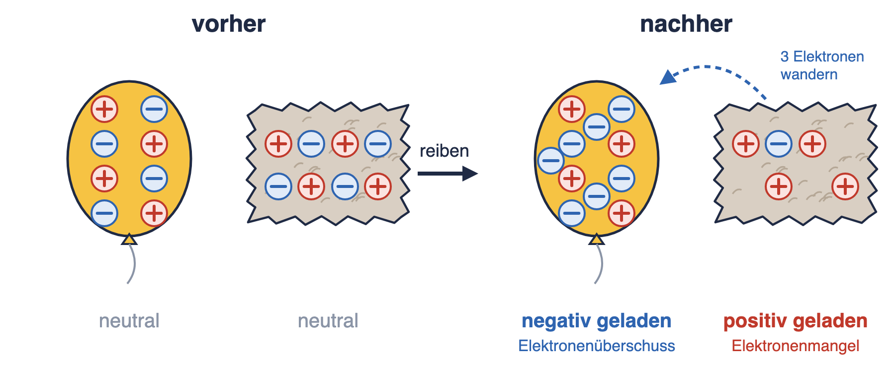
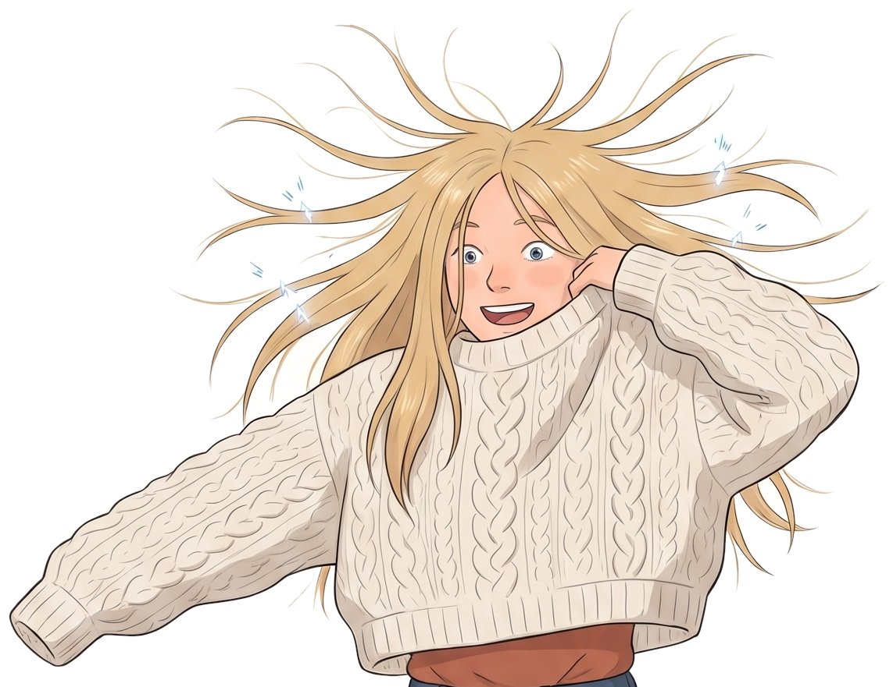
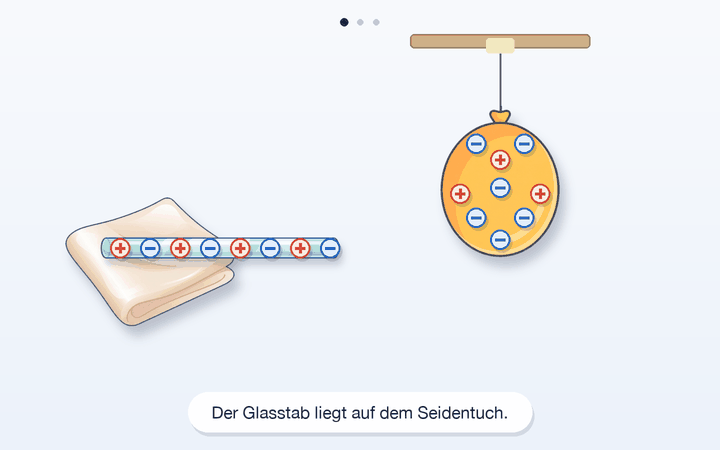
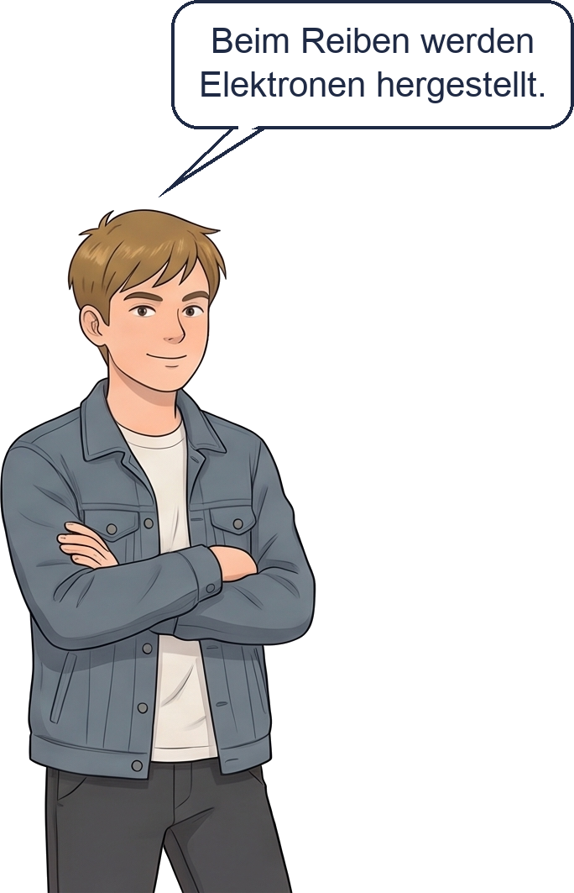

Wo sind wir? A Ladung und Stromkreis · B Stromstärke und Spannung · C Schaltungen · D Widerstand · E Energie und Kosten · F Wirkungen und Gefahren
Das Wichtigste 1. Jeder Körper enthält positive (+) und negative (−) Ladungen. Die negativen Ladungen heißen _________________. Nur sie können wandern.
2. Beim Reiben werden Elektronen von einem Körper auf den anderen übertragen. Es entstehen keine neuen Elektronen. 3. Es gibt zwei Arten von Ladung: positiv und negativ. Gleiche Ladungen ____________ sich ab. Ungleiche Ladungen ____________ sich an. Mit Seide geriebenes Glas wird ______________, ein mit Wolle geriebener Gummistab und ein mit Wolle geriebener Luftballon werden ______________. 4. Auch ein neutraler Körper wird angezogen: Seine Ladungen verschieben sich ein wenig. Das heißt Influenz. Insgesamt bleibt er neutral – neutral heißt nicht „überall gleich viel + und −“, sondern „insgesamt gleich viel“. ◆ 5. Jedes Atom hat einen positiv geladenen Kern und eine Hülle mit Elektronen. Beim Reiben werden nur Elektronen aus der Hülle übertragen – der Kern bleibt an seinem Platz.  Grenze des Bildes: + und − sind Zeichen auf dem Papier. Ladungen selbst kann man nicht sehen – nur, was sie bewirken. |
 | Emma zieht ihren Wollpulli über den Kopf. Dabei knistert es, manchmal blitzt es sogar ein bisschen. Ihre Haare stehen ab und kleben am Pulli. Wo hast du so etwas auch schon erlebt? |
Was glaubst du?
✎ allein · ein bis zwei Sätze · bevor ihr es ausprobiert
Warum stehen Emmas Haare ab und kleben am Pulli? Schreibe deine Vermutung auf. Es gibt hier kein Falsch.
Ich vermute, …
________________________________________________
________________________________________________
✎ in der Gruppe · jeder ins eigene Skript · Material: Elektrostatik-Kit (Stäbe aus Glas, Gummi, Acryl; Tücher aus Wolle, Baumwolle, Seide), 1 Luftballon mit Faden, Papierschnipsel
V1 Reibt den Ballon 10-mal kräftig am Wolltuch. Haltet ihn knapp über die Papierschnipsel. Klebt ihn danach mit dem Faden an die Tischkante, sodass er frei hängt.
V2 Reibt den Glasstab mit dem Seidentuch. Nähert ihn langsam dem hängenden Ballon.
V3 Reibt den Gummistab mit dem Wolltuch. Nähert ihn langsam dem hängenden Ballon.
V4 Probiert weitere Kombinationen aus: Acrylstab, Baumwolltuch …
Das beobachte ich
| Versuch | Beobachtung |
| V1 Ballon und Schnipsel | ☐ ziehen sich an ☐ nichts ☐ stoßen sich ab |
| V2 Glasstab (Seide) und Ballon | ☐ ziehen sich an ☐ nichts ☐ stoßen sich ab |
| V3 Gummistab (Wolle) und Ballon | ☐ ziehen sich an ☐ nichts ☐ stoßen sich ab |
| V4 ____________ und Ballon | ☐ ziehen sich an ☐ nichts ☐ stoßen sich ab |
| V4 ____________ und Ballon | ☐ ziehen sich an ☐ nichts ☐ stoßen sich ab |
✎ allein · Animationen antippen und anschauen · beschreiben
Schau dir jede Animation an – gern zweimal. Beschreibe dann mit dem Satzanfang, was mit den Elektronen passiert.
a) Ballon und Wolltuch

Beim Reiben wandern die Elektronen …
________________________________________________
________________________________________________
b) Glasstab und Seide (V2)

Das Glas gibt … ab. Deshalb …
________________________________________________
________________________________________________
________________________________________________
c) Gummistab und Wolle (V3) – ohne Animation
Der Gummistab nimmt beim Reiben Elektronen von der Wolle auf. Erkläre, warum er den Ballon abstößt.
________________________________________________
________________________________________________
d) Ballon und Papierschnipsel (V1)

Die Schnipsel sind neutral. Der Ballon drückt … Deshalb …
________________________________________________
________________________________________________
________________________________________________
Beispiel: Der Pulli knistert
Beim Ausziehen reiben Pulli und Haare aneinander. Dabei wandern Elektronen von den Haaren auf den Pulli.
Die Haare sind ______________ geladen, der Pulli ist ______________ geladen.
Die Haare stehen ab, weil alle Haare ____________ geladen sind und sich ______________.
Die Haare kleben am Pulli, weil _______________________________________________.
Es knistert, weil Elektronen als winziger Funke zurückspringen.
Aufgabe 1 · Jetzt du
✎ allein · mit dem Stift ins Bild
Zeichne + und − ein und kreuze an. Bild 1 ist schon vorgemacht.
1 (Beispiel) Der Gummistab nimmt Elektronen vom Wolltuch auf. ☐ ziehen sich an |
2 Der Glasstab gibt Elektronen an das Seidentuch ab. ☐ ziehen sich an |
3 Beide Gummistäbe wurden mit Wolle gerieben. ☐ ziehen sich an |
Aufgabe 2 · Stimmt das?
 | Hat Paul recht? Kreuze an und begründe. Paul hat ☐ recht ☐ nicht recht, weil … Hilfe: Checkliste und Satzanfänge → ________________________________ ________________________________ ________________________________ ________________________________ ________________________________
|
✎ allein · erst vergleichen, dann zwei Sätze
Lies deine Vermutung bei „Was glaubst du?“. Was stimmt, was nicht? Verbessere dort in Grün. Schreibe dann hier: Warum knistert der Pulli und klebt der Luftballon? Benutze die Wörter Elektronen, übertragen, geladen, anziehen.
Hilfe: Checkliste und Satzanfänge →
________________________________________________
________________________________________________
________________________________________________
________________________________________________
Ausblick: Beim Knistern springen Elektronen nur einmal kurz über. Was passiert, wenn Elektronen dauerhaft fließen? → nächste Stunde.
◆ Das Bild im Merkkasten und die Wirklichkeit
Erläutere: Vergleiche das Bild mit + und − im Merkkasten mit dem Material. Was zeigt das Bild gut – und was zeigt es nicht? Hilfe: Checkliste und Satzanfänge → ________________________________________________ ________________________________________________ ________________________________________________ ________________________________________________
Danach: Aufgabe mit Material auf der nächsten Seite (Gewitter). |
|